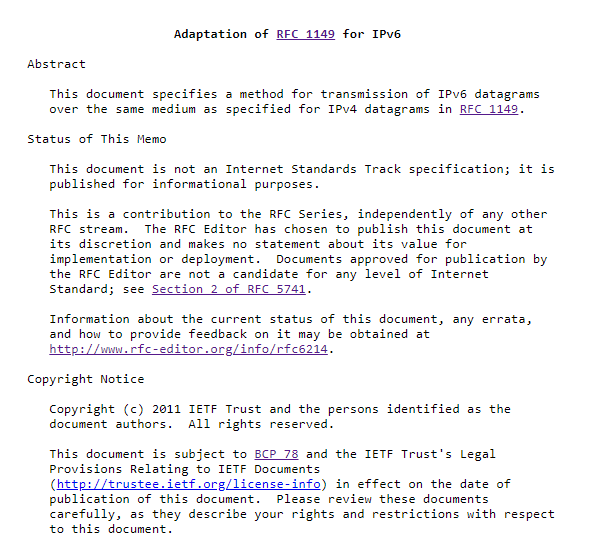

This site groups together several RFC sheets.
What is a RFC sheet ?
The requests for comments (RFC), are a numbered series of official documents describing the technical aspects and specifications of the Internet, or different computer hardware (routers, DHCP server).
What can an RFC sheet looks like?
RFCs contain information about RFCs such as Normative Notation, Security Considerations, or Detailed Specification.
They usually look like this :
